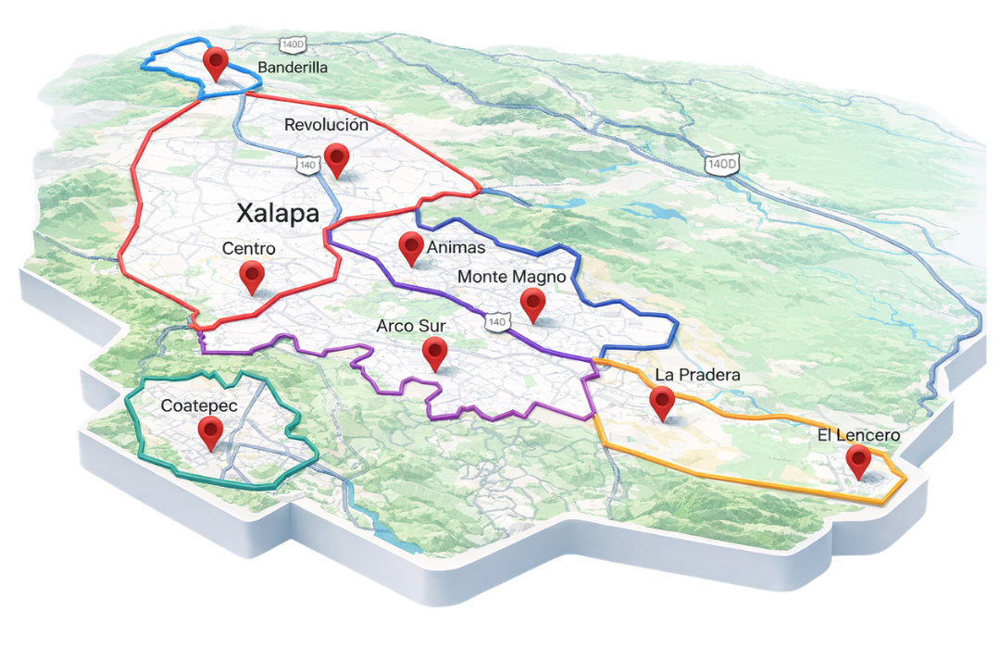

Atención personalizada en las mejores zonas de la ciudad: Las Ánimas, Monte Magno, Imperial de las Ánimas, Coatepec, el Centro Histórico y muchos más. Cuidado con calidez humana.

En Xalapa, entendemos que tu familia es lo más importante. Nuestra agencia ofrece niñeras con amor por el cuidado de peques y capacitadas en desarrollo infantil, perfiles que no encontraras en grupos de Facebook.
Llegamos a cada rincón de la ciudad para cuidar lo que más amas.

Estamos listos para transformar la vida de nuestros peques en Xalapa con amor y profesionalismo.
WhatsApp Xalapa: 222 402 1886